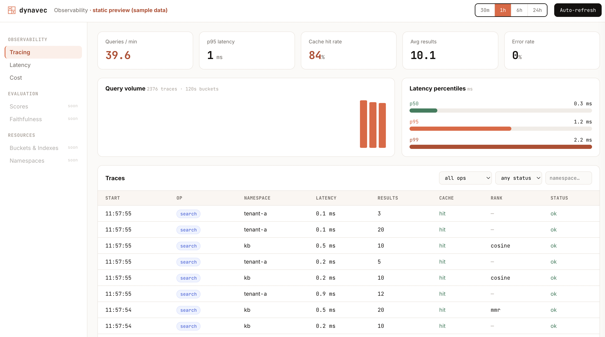

Telemetry dashboard
A native, in-your-brand observability dashboard — a Langfuse-style view of real query telemetry.
Attach a recorder to your client and every search is captured with latency, cache outcome, result count, and score stats. No simulated data.
Live interactive preview: codeforstartups.github.io/dynavec/dashboard (landing-page theme).
1. Expose real telemetry
Attach a recorder to your client and serve the API:
from dynavec import Dynavec, DynavecConfig, SemanticCache
from dynavec.telemetry import TelemetryRecorder
from dynavec.dashboard import serve
rec = TelemetryRecorder()
db = Dynavec(cfg, embedder=emb, cache=SemanticCache(), telemetry=rec)
# ... your app runs searches; the recorder fills automatically ...
serve(rec, port=8779) # JSON API at http://127.0.0.1:87792. Run the dashboard
Points at that API; falls back to sample data if unset:
cd dashboard
npm install
NEXT_PUBLIC_DYNAVEC_API=http://127.0.0.1:8779 npm run dev # http://localhost:3000No AWS? python examples/dashboard_demo.py runs real searches against in-memory
stand-ins and serves the API on :8779 for the dashboard to read.
Tracing view
Shows a query-volume histogram, latency percentiles (p50/p95/p99), cache hit-rate, and a filterable traces table with per-trace drill-down:
| Panel | Shows |
|---|---|
| KPI cards | Queries/min, p95 latency, cache hit rate, average results, error rate |
| Query volume | Histogram of trace counts per time bucket |
| Latency percentiles | p50 / p95 / p99 latency in ms |
| Traces table | Every recorded search, graph_search, and upsert call — namespace, latency, results, cache hit/miss, rank strategy — filterable by op, status, and namespace |

Click any row to open a detail drawer with per-call similarity scores, filter state, and error details.